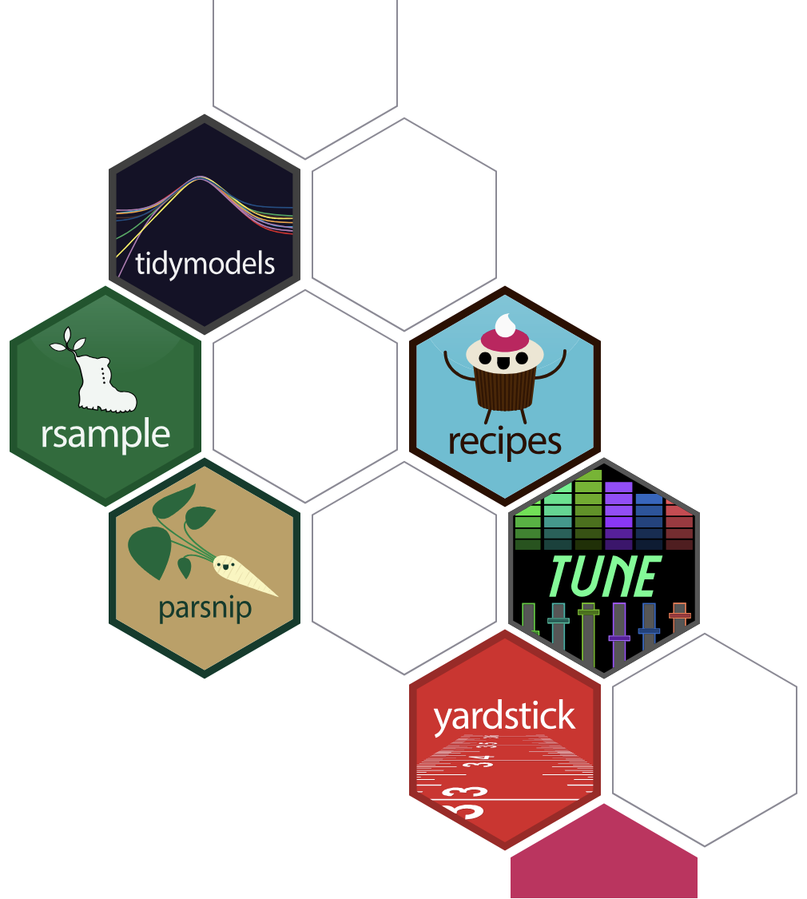
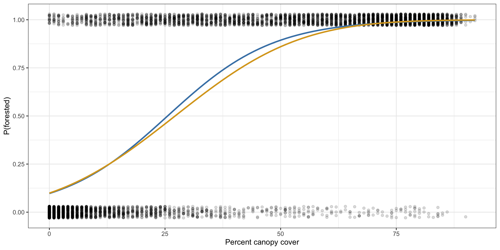

05:00

Generalized Linear Models
Grayson White
Stat 243
Fall 2026, Week 12
Announcements
- Lab 9 released. Due 12/4.
- Lab 10 to be released 12/4, covering Week 12 and 13 content (GLMs and LMMs).
Two models
Linear Regression:
\[\begin{align*} y_i &= \beta_0 + \beta_1 x_{1i} + \cdots + \beta_p x_{pi} + \epsilon_i \\ \epsilon_i &\overset{\text{iid}}{\sim} N(0, \sigma^2) \end{align*}\]
Logistic Regression:
\[ \log \left( \frac{P(y_i = 1)}{1 - P(y_i = 1)} \right) = \beta_0 + \beta_1 x_{1i} + \cdots + \beta_p x_{pi} \]
\[ y_i \overset{\text{ind}}{\sim} Bern(p_i), \textrm{where}~p_i = P(y_i = 1) \]
Both Logistic and Linear Regression can be written as Generalized Linear Models
Generalized Linear Models (GLMs)
A generalized linear model has three components:
- A distribution of \(y_i\)
- A link function, \(g(\mu_i)\), where \(\mu_i = \mathbb{E}(y_i)\)
- Linear predictor, \(\eta_i\)
A GLM is written as follows:
\[ y_i \overset{\text{ind}}{\sim} Dist(g^{-1}(\eta_i)) \]
where:
- \(Dist\) is the assumed distribution of \(y_i\),
- \(g^{-1}(\eta_i)\) is the value of the inverse link, which is \(\mu_i\), and
- \(\eta_i\) is the linear predictor.
Logistic regression fully specified as a GLM
Logistic Regression:
\[ \log \left( \frac{P(y_i = 1)}{1 - P(y_i = 1)} \right) = \beta_0 + \beta_1 x_{1i} + \cdots + \beta_p x_{pi} \]
\[ y_i \overset{\text{ind}}{\sim} Bern(p_i), \textrm{where}~p_i = P(y_i = 1) \]
Logistic Regression (as a GLM):
\[ y_i \overset{\text{ind}}{\sim} Bern\left(\frac{\exp(\beta_0 + \beta_1 x_{1i} + \cdots + \beta_p x_{pi})}{1 + \exp(\beta_0 + \beta_1 x_{1i} + \cdots + \beta_p x_{pi})}\right) \]
- Distribution of \(y_i\): Bernoulli
- Link function: logit; \(g(p_i) = \log\left(\frac{p_i}{1 - p_i}\right)\), so \(p_i = g^{-1}(\eta_i) = \frac{\exp(\eta_i)}{1 + \exp(\eta_i)}\)
- Linear predictor: \(\eta_i = \beta_0 + \beta_1 x_{1i} + \cdots + \beta_p x_{pi}\)
Assumptions for logistic regression
Now that we have written down the logistic regression model,
\[ y_i \overset{\text{ind}}{\sim} Bern\left(\frac{\exp(\beta_0 + \beta_1 x_{1i} + \cdots + \beta_p x_{pi})}{1 + \exp(\beta_0 + \beta_1 x_{1i} + \cdots + \beta_p x_{pi})}\right), \]
we can see its assumptions:
- Binary Response: The response variable is dichotomous (two possible responses).
- Independence: The observations must be independent of one another.
- Variance Structure: By definition, the variance of a Bernoulli random variable is \(p(1−p)\), so that variability is highest when \(p=.5\).
- Linearity: The log odds, \(\log\left(\frac{p}{1−p}\right)\), must be a linear function of \(x\).
Your turn: Write the linear regression model as a GLM
Linear Regression:
\[\begin{align*} y_i &= \beta_0 + \beta_1 x_{1i} + \cdots + \beta_p x_{pi} + \epsilon_i \\ \epsilon_i &\overset{\text{iid}}{\sim} N(0, \sigma^2) \end{align*}\]
Linear Regression (as a GLM):
\[ y_i \overset{\text{ind}}{\sim} N(\beta_0 + \beta_1 x_{1i} + \cdots + \beta_p x_{pi},~ \sigma^2) \]
- Distribution of \(y_i\): Normal
- Link function: identity; \(g(\mu_i) = \mu_i\), so \(\mu_i = g^{-1}(\eta_i) = \eta_i\)
- Linear predictor: \(\eta_i = \beta_0 + \beta_1 x_{1i} + \cdots + \beta_p x_{pi}\)
Consider
Why is it important that we use the link function \(g(p_i) = \log\left(\frac{p_i}{1 - p_i}\right)\) for logistic regression?
Why is it okay that we use the identity link in linear regression?
Probit regression
Consider the following GLM:
- Distribution of \(y_i\): Bernoulli
- Link function: “probit”;
- \(g(p_i) = \Phi^{-1}(p_i)\), so \(p_i = g^{-1}(\eta_i) = \Phi(\eta_i)\),
- where \(\Phi(z) = \int_{-\infty}^{z} \frac{1}{\sqrt{2\pi}} e^{-t^2/2} \, dt\) is the standard normal CDF
- Linear predictor: \(\eta_i = \beta_0 + \beta_1 x_{1i} + \cdots + \beta_p x_{pi}\)
Probit regression as a GLM:
\[ y_i \overset{\text{ind}}{\sim} Bern(\Phi(\beta_0 + \beta_1 x_{1i} + \cdots + \beta_p x_{pi})) \]
Probit regression in R
(Intercept) canopy_cover
2.22962905 -0.08723057 (Intercept) canopy_cover
1.28704549 -0.04734969 - Note:
family = "binomial"gives you a logit link function by default.
Plotting probit regression in R
forested %>%
mutate(z = ifelse(forested == "Yes", 1, 0)) %>%
ggplot(aes(x = canopy_cover, y = z)) +
geom_jitter(height = 0.03, width = 0, alpha = 0.15) +
geom_smooth(method = "glm", se = FALSE, color = "steelblue",
method.args = list(family = binomial(link = "logit"))) +
geom_smooth(method = "glm", se = FALSE, color = "goldenrod",
method.args = list(family = binomial(link = "probit"))) +
labs(x = "Percent canopy cover", y = "P(forested)") +
theme_bw()
A GLM for Count Data
Current Distributional Options
The Normal and Bernoulli distributions are as follows:
\(Y \sim Normal(\mu, \sigma^2)\): \[ f(y) = \frac{1}{\sqrt{2\pi\sigma^2}} \exp\left(-\frac{(y - \mu)^2}{2\sigma^2}\right), \text{ for } y \in \mathbb{R}. \]
\(Y\sim Bernoulli(p)\): \[ P(Y = y) = p^y (1 - p)^{1 - y}, \text{ for } y \in \{0, 1\}. \]
What if our response variable is a count, i.e., \(y \in \{0, 1, 2, \dots\}\)?
\(Y\sim Poisson(\lambda)\): \[ P(Y = y) = \frac{\lambda^y e^{-\lambda}}{y!}, \text{ for } y \in \{0, 1, 2, \dots\}. \]
Poisson Distribution
Poisson Distribution
Poisson Distribution
How can we construct a GLM for counts based on the Poisson distribution?
Remember, a GLM consists of three components:
- A distribution of \(y_i\)
- A link function, \(g(\mu_i)\), where \(\mu_i = \mathbb{E}(y_i)\)
- Linear predictor, \(\eta_i\)
05:00
Poisson regression as a GLM
- Distribution of \(y_i\): Poisson
- Link function: log; \(g(\lambda_i) = \log(\lambda_i)\), so \(\lambda_i = g^{-1}(\eta_i) = \exp(\eta_i)\)
- Linear predictor: \(\eta_i = \beta_0 + \beta_1 x_{1i} + \cdots + \beta_p x_{pi}\)
\[ y_i \overset{\text{ind}}{\sim} Pois\left(\exp(\beta_0 + \beta_1 x_{1i} + \cdots + \beta_p x_{pi})\right) \]
(Boardwork) A graphical comparison of Normal and Poisson regression.
A graphical comparison of Normal and Poisson regression

Poisson regression assumptions
Now that we have written down the Poisson regression model,
\[ y_i \overset{\text{ind}}{\sim} Pois\left(\exp(\beta_0 + \beta_1 x_{1i} + \cdots + \beta_p x_{pi})\right) \]
we can see its assumptions:
- Poisson Response: The response variable is a count, described by a Poisson distribution.
- Independence: The observations must be independent of one another.
- Mean = Variance: By definition, the mean of a Poisson random variable must be equal to its variance.
- Linearity: The log of the mean rate, \(\log(\lambda)\), must be a linear function of \(x\).
Poisson regression in R
# A tibble: 6 × 6
...1 location age total numLT5 roof
<dbl> <chr> <dbl> <dbl> <dbl> <chr>
1 1 CentralLuzon 65 0 0 Predominantly Strong Material
2 2 MetroManila 75 3 0 Predominantly Strong Material
3 3 DavaoRegion 54 4 0 Predominantly Strong Material
4 4 Visayas 49 3 0 Predominantly Strong Material
5 5 MetroManila 74 3 0 Predominantly Strong Material
6 6 Visayas 59 6 0 Predominantly Strong MaterialData on households in the Philippines (more info: Chapter 4.4 of Beyond MLR)
Each row represents a household
age= the age of the head of householdtotal= the number of people in the household other than the head
Exploratory data analysis

Poisson regression in R
Plotting Poisson regression in R

Plotting Poisson vs linear regression

Linear regression produces nearly the same line. Advantages of Poisson regression?
Next time
- More fun with GLMs